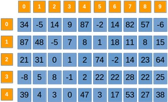
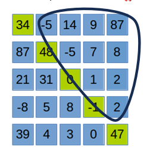
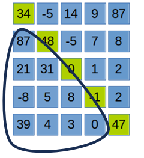
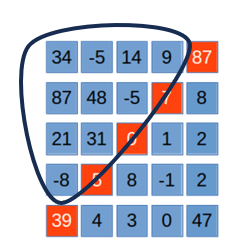
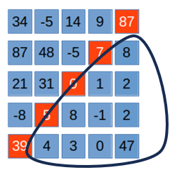

Matricea ca structură de date
bidimensională și organizată.
Tipuri de date numerice si
caractere:
• int, long, small, float, char
Explorând ideile și lumea vizuală
ale matricei pătratice.
Operatii si tehnici:
• Parcurgere, citire, afișare etc.
• Relații și proprietăți
În lumea vizuală a datelor,
rânduri și coloane se întâlnesc
într-o armonie geometrică.
Matricea pătratică și
aplicațiile ei în lumea încântătoare
a caracterelor speciale.
Explorând puterea și eleganța
limbajului de programare în
dezvoltarea software.
În călătoria cunoașterii,
orice lucru este un profesor
potențial.
În limbajul de programare C++, o matrice este o structură bidimensională utilizată pentru a stoca și manipula seturi de date omogene.
Matricea oferă o abordare eficientă pentru lucrul cu date tabulare, rezolvarea sistemelor de ecuații liniare și aplicarea transformărilor matriceale în algoritmi și programare numerică.
Aceasta este structurată pe linii și coloane, cu un număr de n*n elemente. Fiecare element poate fi identificat și accesat cu ajutorul a doi indici: i și j.
#include <iostream>
using namespace std;
int main() {
// Declarare și inițializare a unei matrice 2x3
int matrix[2][3] = {{1, 2, 3}, {4, 5, 6}};
// Accesarea și afișarea elementelor matricei
for(int i = 0; i < 2; ++i) {
for(int j = 0; j < 3; ++j) {
cout << matrix[i][j] << " ";
}
cout << endl;
}
return 0;
}
În acest exemplu, o matrice 2x3 este declarată și inițializată. Apoi, elementele matricei sunt accesate și afișate folosind două structuri repetitive for.
În C++, tipurile de date sunt esențiale pentru manipularea și stocarea informațiilor în programe. Vom explora câteva dintre cele mai frecvent utilizate tipuri de date:
#include <iostream>
using namespace std;
int main() {
int matrice_nrIntregi [20][20];
float matrice_nrReale [32][9];
char matrice_Siruridecaractere[100][100];
return 0;
}
În C++, spațiul alocat pentru fiecare tip de date este important pentru optimizarea memoriei. Iată câteva aspecte esențiale:
sizeof pentru a determina câți octeți ocupă un tip de date. De exemplu:
#include <iostream>
using namespace std;
int main() {
cout << "Size of int: " << sizeof(int) << " bytes" << endl;
cout << "Size of float: " << sizeof(float) << " bytes" << endl;
cout << "Size of char: " << sizeof(char) << " bytes" << endl;
return 0;
}
Pointerii sunt o componentă importantă pentru lucrul cu spațiul de memorie în C++. Iată un exemplu simplu:
#include <iostream>
using namespace std;
int main() {
int number = 42;
int* pointer = &number;
cout << "Valoarea numarului: " <<number << endl;
cout << "Adresa numarului: " <<&number << endl;
cout << "Valoarea adresei memorata de pointer: " << *pointer << endl;
return 0;
}
Acest exemplu este ilustrativ pentru utilizarea pointerilor , pentru a accesa adresa și valoarea unei variabile în C++.
În cazul programării în C++, o modalitate comună de a vizualiza o matrice este prin afișarea ei pe ecran folosind două structuri for pentru a itera prin rânduri și coloane și a afișa fiecare element. Această afișare poate fi utilă pentru a verifica corectitudinea datelor introduse în matrice sau pentru a analiza comportamentul algoritmilor care lucrează cu matricea.
1
2
3
4
5
6
7
8
9
Această matrice 3x3 conține numere de la 1 la 9 și poate fi reprezentată vizual printr-o tabelă cu 3 rânduri și 3 coloane.
Indicii n și m : Acești indici reprezintă dimensiunile matricei. De obicei, n reprezintă numărul de rânduri (sau elemente pe verticală), iar m reprezintă numărul de coloane (sau elemente pe orizontală). De exemplu, o matrice de dimensiuni 4x7 are 4 rânduri și 7 coloane.
Indicii i și j : Acești indici sunt folosiți pentru a accesa un element specific din matrice. În mod obișnuit, i este indicele pentru rânduri, iar j este indicele pentru coloane. Astfel, matricea[i][j] reprezintă elementul de pe rândul i și coloana j al matricei.

În exemplul dat avem o matrice indexată de la 0, cu 5 linii(0-4) și 10 coloane(0-9). Cu alte cuvine n = 5, m = 9.
Căsutele portocalii semnifică indicele liniei respectiv coloanelor, iar casuțele albastre reprezintă valorile din matrice.
Parcurgerea matricei permite efectuarea de operații asupra fiecărui element. Funcția asociată acestei operații este flexibilă și poate fi adaptată pentru a realiza diverse sarcini în funcție de nevoi.
void parcurgeMatrice(int matrice[][100], int randuri, int coloane) {
for (int i = 0; i < randuri; ++i) {
for (int j = 0; j < coloane; ++j) {
// Efectuati operatii asupra elementului matricei aici
}
}
}
Operația de citire a matricei presupune introducerea elementelor acesteia. Pentru aceasta, se utilizează o funcție care parcurge fiecare element al matricei și cere utilizatorului să introducă valorile corespunzătoare.
#include <iostream>
using namespace std;
void citesteMatrice(int matrice[][100], int randuri, int coloane) {
for (int i = 0; i < randuri; ++i) {
for (int j = 0; j < coloane; ++j) {
cout << "Introduceti elementul [" << i + 1 << "][" << j + 1 << "]: ";
cin >> matrice[i][j];
}
}
}
Afișarea matricei presupune parcurgerea acesteia și afișarea fiecărui element. Aceasta se realizează prin intermediul unei funcții care parcurge matricea și afișează valorile corespunzătoare.
void afiseazaMatrice(int matrice[][100], int randuri, int coloane) {
for (int i = 0; i < randuri; ++i) {
for (int j = 0; j < coloane; ++j) {
cout << matrice[i][j] << " ";
}
cout << endl;
}
}
Eliminarea unei linii sau coloane constă în mutarea elementelor de deasupra sau din stânga în jos sau în dreapta, astfel încât să se completeze spațiul lăsat liber. Funcțiile corespunzătoare pentru aceasta sunt eliminateLinie și eliminateColoana.
void eliminaLinie(int matrice[][100], int &randuri, int coloane, int linie) {
for (int i = linie; i < randuri - 1; ++i) {
for (int j = 0; j < coloane; ++j) {
matrice[i][j] = matrice[i + 1][j];
}
}
--randuri;
}
( Implementarea funcției pentru eliminarea unei coloane este aproape identică... rămane o provocare pentru cei cu-adevărat pasionați )
Afișarea chenarului matricei constă în evidențierea elementelor de la margine (prima și ultima linie, prima și ultima coloană). Aceasta este utilă în diverse contexte, cum ar fi vizualizarea frontierei unui set de date.
void afiseazaChenar(int matrice[][100], int randuri, int coloane) {
for (int i = 0; i < randuri; ++i) {
for (int j = 0; j < coloane; ++j) {
if (i == 0 || i == randuri - 1 || j == 0 || j == coloane - 1) {
cout << matrice[i][j] << " ";
} else {
cout << " ";
}
}
cout << endl;
}
}
Operația de citire a matricei presupune introducerea elementelor acesteia. Funcția `citesteMatrice` permite utilizatorului să introducă valorile matricei.
#include <iostream>
using namespace std;
void citesteMatrice(int matrice[][100], int &n) {
cin >> n;
for (int i = 0; i < n; ++i) {
for (int j = 0; j < n; ++j) {
cout << "Introduceti elementul [" << i + 1 << "][" << j + 1 << "]: ";
cin >> matrice[i][j];
}
}
}
void elementeDeasupraDP(int matrice[][100], int n) {
for (int i = 0; i < n; ++i) {
for (int j = i + 1; j < n; ++j) {
cout << matrice[i][j] << " ";
}
}
}

void elementeDedesuptDP(int matrice[][100], int n) {
for (int i = 1; i < n; ++i) {
for (int j = 0; j < i; ++j) {
cout << matrice[i][j] << " ";
}
}
}

void elementeDedesuptDP(int matrice[][100], int n) {
for (int i = 1; i < n; ++i) {
for (int j = 0; j < i; ++j) {
cout << matrice[i][j] << " ";
}
}
}

void elementeDedesuptDS(int matrice[][100], int n) {
for (int i = 1; i < n; ++i) {
for (int j = n - i; j < n; ++j) {
cout << matrice[i][j] << " ";
}
}
}

Pentru fiecare funcție, ' i ' este indicele liniei, iar ' j ' indicele coloanei:
- În cazul elementelor de deasupra DP ` j > i `.
- În cazul elementelor de dedesubtul DP ` j < i `.
- În cazul elementelor de deasupra DS ` j + i < n - 1 `.
- În cazul elementelor de dedesubtul DS ` j + i > n - 1 `.
Matricea în matematică și matricea în C++ sunt asemănătoare în sensul că ambele sunt structuri bidimensionale compuse dintr-o colecție ordonată de elemente dispuse în rânduri și coloane. Cu toate acestea, în timp ce conceptul fundamental este același, există unele diferențe în modul în care sunt folosite și implementate în matematică și în programare.
[ a11 a12 ... a1n ]
[ a21 a22 ... a2n ]
[ ... ... ... ...]
[ am1 am2 ... amn ]
În C++, poți implementa o varietate de operații matematice cu matricea care sunt echivalente cu operațiile matematice clasice. Iată câteva exemple de operații matematice comune pe care le poți implementa în C++:
1. Adunarea a două matrice: Adunarea a două matrice se face prin adunarea elementelor corespunzătoare din cele două matrice și obținerea unei noi matrice ca rezultat.
2. Scăderea a două matrice : Scăderea a două matrice se face prin scăderea elementelor corespunzătoare din prima matrice și a celor corespunzătoare din a doua matrice, obținându-se o nouă matrice ca rezultat.
3. Înmulțirea unei matrice cu un scalar: Înmulțirea unei matrice cu un scalar se face prin înmulțirea fiecărui element al matricei cu scalarul dat, rezultând o nouă matrice.
4. Înmulțirea a două matrice: Înmulțirea a două matrice se face prin însumarea produselor elementelor corespunzătoare din fiecare rând al primei matrice și fiecare coloană a celei de-a doua matrice.
5. Transpunerea unei matrice: Transpunerea unei matrice se realizează prin interschimbarea rândurilor cu coloanele, astfel încât fiecare element aij devine aji.
6. Determinantul unei matrice : Calculul determinantului unei matrice poate fi implementat folosind metode precum regula lui Sarrus pentru matricele de dimensiune 3x3 sau metoda lui Laplace pentru matricele de dimensiune mai mare.
Exercițiul 1 - Sesiunea august-septembrie 2021
Scrieți un program C/C++ care citește de la tastatură două numere naturale din intervalul [2,102], k și
n, și construiește în memorie un tablou bidimensional cu n linii și n coloane, astfel încât parcurgând
diagonala principală, de sus în jos, să se obțină un șir strict crescător format din primii n multipli naturali
nenuli ai lui k și parcurgând fiecare linie a sa, de la stânga la dreapta, să se obțină câte un șir strict
crescător de numere naturale consecutive. Programul afișează pe ecran tabloul obținut, fiecare linie a
tabloului pe câte o linie a ecranului, elementele de pe aceeași linie fiind separate prin câte un spațiu.
Exemplu: pentru k=3 și n=4 se obține tabloul de mai jos:
3 4 5 6
5 6 7 8
7 8 9 10
9 10 11 12
Acordând atenție cerinței observăm ca programul citește două valori n și k.
Construiește o matrice de tipul n * n, care elementele fiecărei linii sunt strict crescătoare. O altă condiție importantă, e că și elementele de pe diagonala principală trebuie să fie multipli numărului n și să fie stric în ordine crescătoare.
• Observație: O bună interpretare a problemei este de a găsi o relație matematică care depinde de linie și de k, astfel încât, începând de la acel număr start pe diagonala principală să avem un multiplu al lui k iar toate elementele sa fie în ordine strict crescătoare cu relația a[i][j+1]=a[i][j]+1; a-matricea, i- indicele liniei, j- indicele coloanei. Așadar, ajungem la concluzia că primul element de pe fiecare linie are relația: a[i][j] = k*i - (i-1) .
#include <iostream>
using namespace std;
void construire(int a[101][101], int n, int k)
{
for(int i=1; i<=n; i++)
for(int j=1; j<=n; j++)
{
if( j==1 )
a[i][j] = k*i - (i-1);
else
a[i][j] = a[i][j-1] + 1;
}
}
void afisare(int a[101][101], int n)
{
for(int i=1; i<=n; i++)
{
for(int j=1; j<=n; j++)
cout << a[i][j] << " ";
cout << endl;
}
}
int main()
{
int n, k, a[101][101]; //declararea variabilelor
cin >> n >> k; //citirea valorilor
construire(a,n,k); //construirea matricei
afisare(a,n); //functie care afiseaza matricea
return 0;
}
Exercițiul 2 - Simulare – 6 martie 2024
Variabilele i şi j sunt de tip întreg, iar variabila a memorează un tablou bidimensional cu 5 linii şi 5 coloane, numerotate începând de la 0, având iniţial toate elementele egale cu 1. Scrieţi secvenţa de instrucţiuni C/C++ de mai jos, înlocuind punctele de suspensie cu instrucțiuni adecvate, dintre care cel mult patru de atribuire, astfel încât, în urma executării secvenţei obţinute, variabila a să memoreze tabloul alăturat.
for(i=0;i<5;i++) | 0 0 0 0 0 for(j=0;j<5;j++) | 0 2 2 2 2 .................. | 0 2 4 4 4 | 0 2 4 6 6 | 0 2 4 6 8
Această problema ar părea inițial puțin mai dificilă, totuși ne putem bucura de armonia structurii acesteia.
Mai întâi observăm că matricea este simetrică față de diagonala principală. Studiind relația dintre elemente și respectiv indicii acesteia ajungem la o concluzie.
Valoarea elementului a[i][j] este dublul minimului dintre indicii i și j. Astfel relația devine: a[ i ][ j ] = min( i, j ) * 2.
for( i = 0; i < 5; i++)
for( j = 0; j < 5; j++)
if( i < j )
a[i][j] = i * 2;
else //i>=j
a[i][j] = j * 2;
1. Silvia Grecu, Lucia Miron, Mirela Țibu, 2019, Bacalaureat – Informatica : limbajul C++ : ghid complet de pregătire a examenului de Bacalaureat : specializările Matematica-Informatica, Științe ale Naturii, Editura Paralela 4.
2. Silvia Grecu, Lucia Miron, Mirela Țibu, 2019, Memorator de informatica : limbaj C++ : clasele 9-12, Editura Paralela 4.
3. Susana Gălățan, Diana Ghinea, Ana Întuneric, Ștefana Radu, 2023, Bacalaureat : ghid de pregătire : informatica intensiv : C – C++, Sigma.
1. https://www.pbinfo.ro/articole/16/subiecte-de-la-examene
2. https://www.pbinfo.ro/articole/5622/declararea-matricelor-referirea-elementelor
3. https://www.pbinfo.ro/articole/5626/tablouri-patratice
4. https://www.pbinfo.ro/probleme/categorii/48/tablouri-bidimensionale-matrice-generari-de-matrice
5. https://infoas.ro/lectie/98/matrice-patratice-in-c-diagonala-principala-si-secundara
6. https://danajebelean.com/CS/Matrice/Zone_Speciale_Matrice.pdf